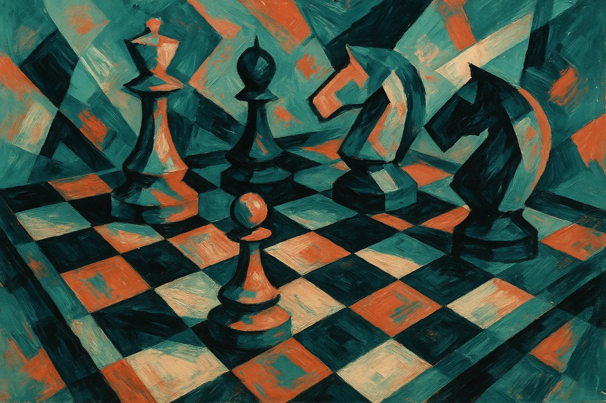
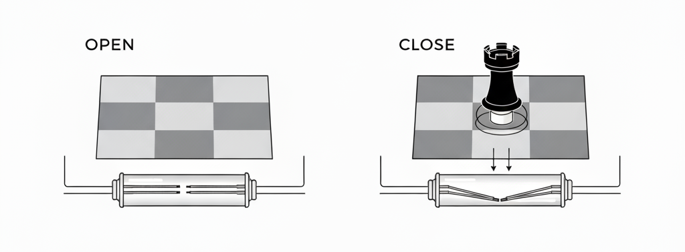
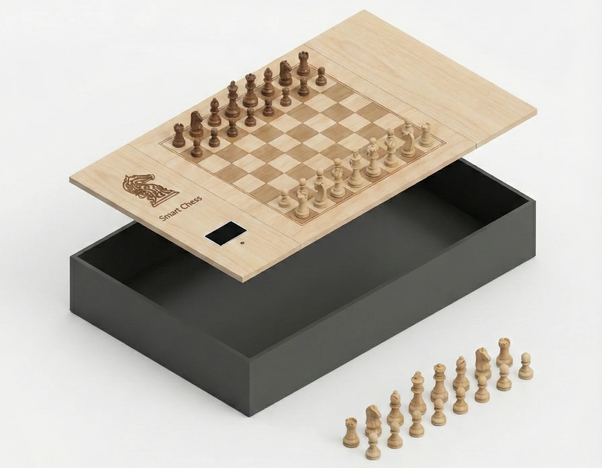
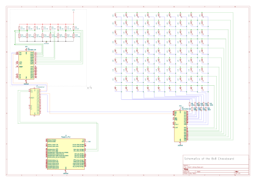
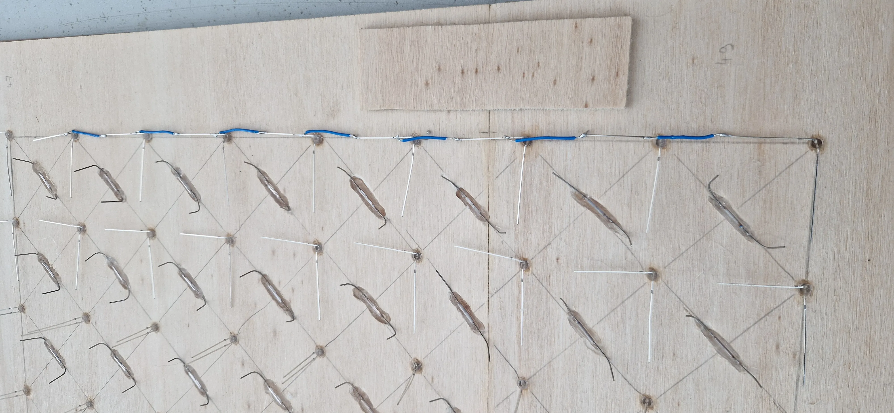
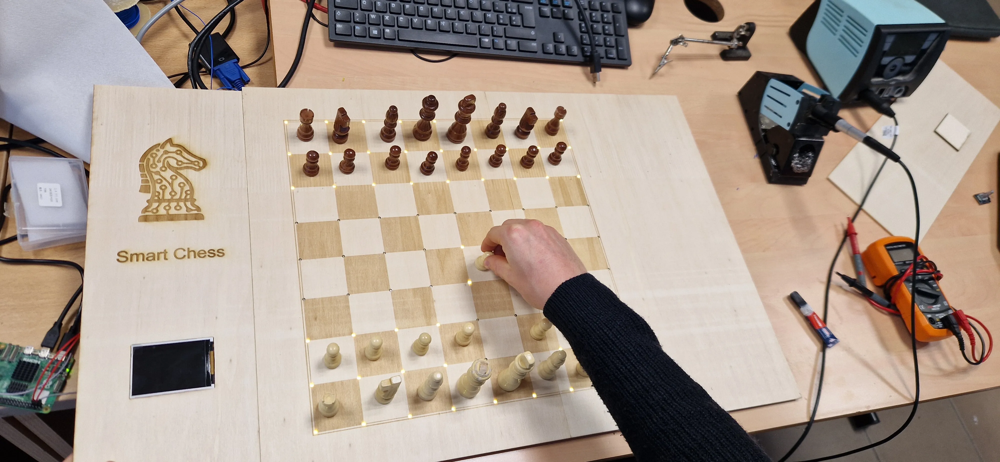
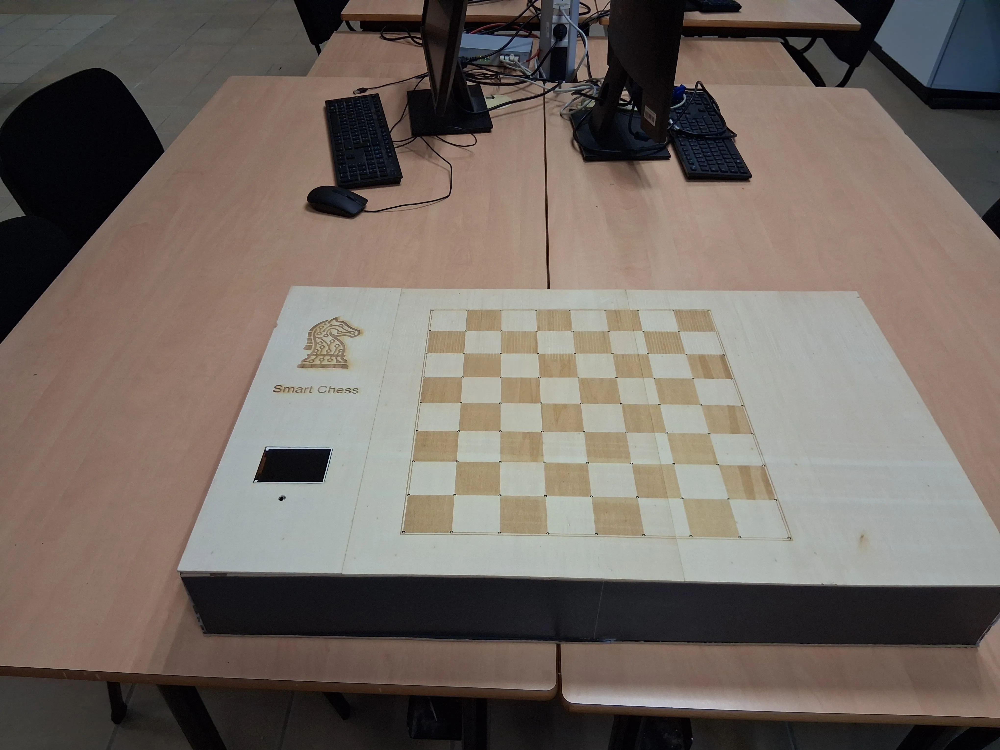
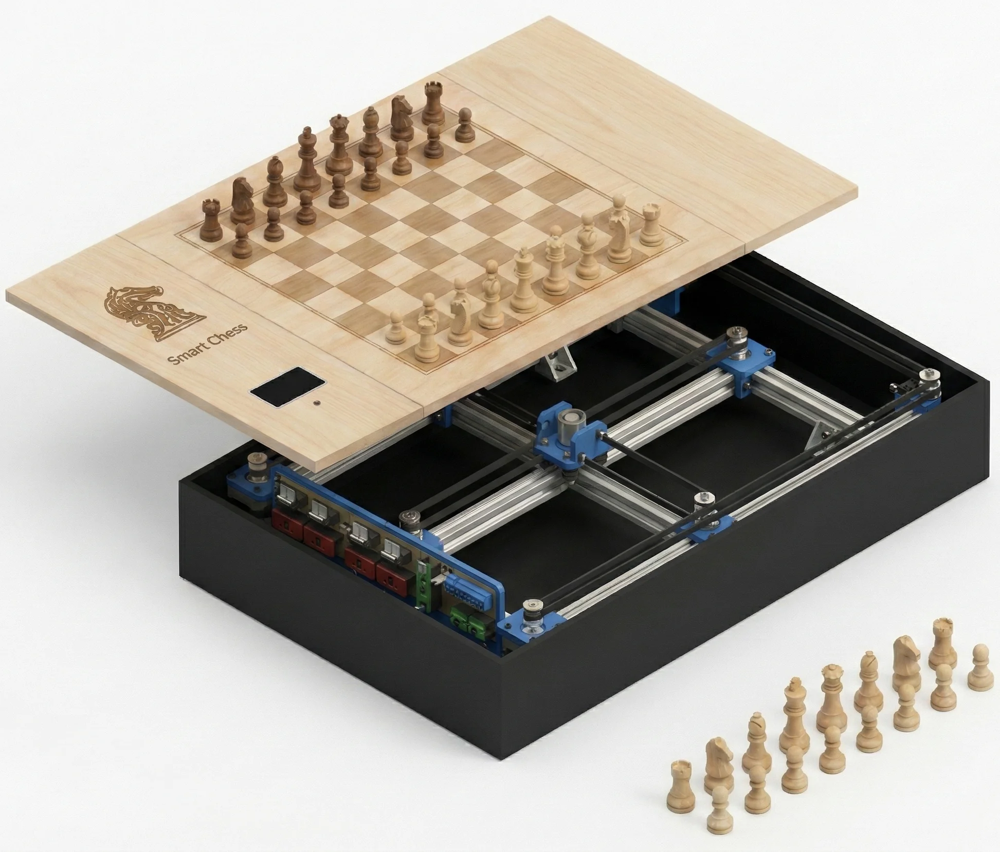
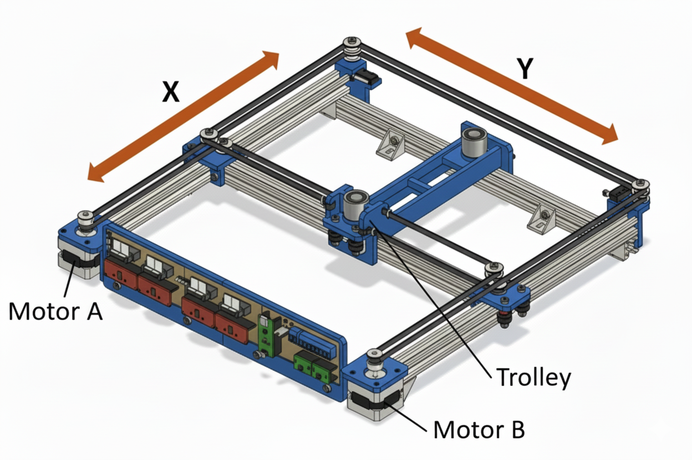

SmartChess — A Robotic Chessboard
Full perception-to-action pipeline: CNN-based board detection • Lucas-Kanade tracking • Real-time robotic actuation. Optimized for low-latency inference on embedded platforms.

1. Chess Engine Architecture (0x88)
A small, readable engine built on the 0x88 board model: compact indexing, fast bounds checks, simple move generation, and a reversible state with perft validation.
For fast, simple move generation I use the classic
0x88 board representation. The idea: store
the board in a 128‑element array (8 ranks × 16 files).
Playable squares are indices where
(sq & 0x88) == 0. Any step that crosses the
board boundary flips bit 0x88, so out‑of‑bounds is a single,
branch‑cheap check.
2. Piece Detection & LED Display
A grid of magnetic sensors under the board tracks piece positions, while an LED matrix provides intuitive visual feedback.
Reed Sensor-Based Detection
The system uses 64 reed sensors (Hall effect) placed under each square of the 8x8 grid. A small neodymium magnet is embedded in the base of each chess piece. When a piece is placed on a square, the sensor detects the magnetic field, registering the piece's position. This method provides a reliable, binary state of the entire board at any moment, which is essential for the game logic.

LED Matrix Display
Visual feedback is handled by two HT16K33 LED matrix driver modules. This system can:
- Indicate possible moves for a selected piece.
- Highlight the last move made by the opponent or the robot.
- Display suggestions from the AI.
- Create visual effects for special events like captures, promotions, or checkmate.
The HT16K33 modules are connected to the main controller via I2C, each controlling multiple LED segments for board illumination.
3. Real-Time Chessboard Detection & Tracking
In this project, I developed a real-time detection and tracking system specifically for video, using a two-step approach that combines the power of Convolutional Neural Networks (CNN) for initial detection with an extremely fast tracking algorithm to maintain localization in successive images. This system complements the reed sensor system, helping to resolve issues with illegal moves or doubts about piece positions by providing visual confirmation.
Here are the exact components of this advanced model I implemented:
1. Detection Phase (Step 1)
This phase is used to find the chessboard in the initial image or if tracking has been lost.
- Neural Network: The model uses a Convolutional Neural Network (CNN).
- Architecture: It is a classic classification architecture based on a CNN pyramid plus Max Pool.
- Performance: This model achieved 96% accuracy. It typically runs in about 30 milliseconds per image.
2. Tracking Phase (Step 2)
Once the chessboard points have been located (by the detection phase), the system switches to the tracking step for subsequent video frames, which generally do not change much.
- Tracking Algorithm: It uses a classic keypoint tracking algorithm.
- Specific Implementation: The algorithm I used is the Lucas-Kanade algorithm (LK algorithm).
- Speed: The LK algorithm is extremely fast, running on the order of milliseconds.
- Fallback Logic: If the system loses track of the chessboard during tracking, it returns to the first step (CNN detection).
The combination of these two steps allows for a real-time chessboard detector.
Model in Development (YOLO)
At the time of this project, I was also working on a YOLO chessboard detection algorithm. YOLO (You Only Look Once) is a very performant machine learning technique, but the details of its implementation were not yet finalized.
4. Electronics Prototyping (2×2 PoC)
A 2×2 proof-of-concept tile was built to validate sensing, multiplexing, and firmware timings before scaling to the full 8×8 chessboard.

5. Full 8×8 Board Architecture
The production board is orchestrated by a Raspberry Pi 5, which centralizes game logic, AI, and communication with peripherals, including a dedicated microcontroller for robotics.
3D Design & Modeling
Before fabrication, the entire chessboard structure and enclosure were designed in CAD software to ensure precise fit and alignment of all components.

Electronics Architecture
The final architecture is built on the principles validated in the 2x2 PoC, scaled up for the full board.

- System Brain: A Raspberry Pi 5 running Raspberry Pi OS and the main Python script. It handles the AI, game logic, and communicates with other components.
- LED Control: Two HT16K33 LED driver modules are connected to the Pi via I2C for board illumination.
- Piece Detection: The 64 reed sensors are read via MCP23017 I/O expanders, which communicate with the motor controller or the Pi.
- Motor Control: An ESP32 microcontroller receives motion commands from the Pi via a serial (UART) link. It drives the stepper motors using A4988 or TMC2209 drivers and controls the electromagnet with a MOSFET.
Software
The main game logic runs on the Raspberry Pi using Python.
Two versions are available: chess_game_v1.py (basic)
and chess_game_v2.py (advanced with opening book support).
# Navigate to the V2 AI directory and install
cd ia_marc/V2/
python3 -m venv venv
source venv/bin/activate
pip install -r requirements.txt
# Launch the game
cd prototypes/echiquier_8x8/firmware/ia_embarquee/
python3 chess_game_v2.pyThe AI offers 9 difficulty levels (ELO 200–1800) and supports Polyglot opening books for stronger play. The ESP32 firmware is written in C++ and handles motor control via the AccelStepper library.
Fabrication & Assembly Gallery
The physical board is built from laser-cut MDF, with precision-milled pockets for reed sensors and recesses for LEDs. Each piece is modified to embed a neodymium magnet in its base, ensuring reliable detection.

Real-Time Piece Detection
The system provides real-time visual feedback by detecting piece positions and illuminating the corresponding LEDs at each corner of the occupied square.
Final Assembly
The completed chessboard integrates all electronic systems within an elegant wooden enclosure, with a professional finish suitable for exhibition or tournament play.


6. Mechanical Platform & Manipulator
A two-axis XY gantry system, concealed beneath the playing surface, moves the pieces precisely using an electromagnet.
Architecture & Operation
The robot is a two-axis Cartesian system (X and Y) using MGN12 linear rails and GT2 belts, driven by NEMA17 stepper motors. This design ensures smooth and accurate movement.
- The X-axis moves a carriage horizontally.
- The Y-axis moves the longitudinal rail supporting the electromagnet.
To move a piece, the Raspberry Pi sends the start and end coordinates to the microcontroller. The robot positions the electromagnet under the source square, activates it to grip the piece, moves to the target square, and deactivates it to release the piece.

7. Electronics Design & Schematics
Detailed circuit schematics for the sensing matrix, LED drivers, electromagnet control, and stepper motor drivers.
Reed Sensor Matrix (8×8)
The 64 reed switches are arranged in a keyboard-style matrix with anti-ghosting diodes. This reduces the required GPIO pins from 64 to just 16 (8 rows + 8 columns), while preventing false detections when multiple pieces are present.
LED Matrix Driver Architecture
Two HT16K33 LED matrix driver modules are controlled via I2C, each with a unique address. The HT16K33 provides 16×8 LED driving capability with built-in key scanning and PWM dimming, simplifying the board illumination system.
XY Gantry Stepper Drivers
Two A4988 (or DRV8825) stepper drivers independently control the X and Y axis NEMA 17 motors. Configured for 1/16 microstepping, they provide smooth motion with 3200 steps per revolution. The ESP32 generates step pulses and direction signals.

Bill of Materials (BOM)
Key components used in the electronics subsystems:
- Controllers: Raspberry Pi 5 (4GB), ESP32-DevKit-V1
- LED Drivers: 2× HT16K33 LED matrix modules
- Motor Drivers: 2× A4988 or DRV8825 stepper drivers
- Sensors: 64× KSK-1A85 reed switches, 64× 1N4148 diodes
- Actuators: 2× NEMA 17 steppers (1.2A/phase), 1× 12V electromagnet (2kg holding force)
- Power: IRLZ44N MOSFET, 1N4007 flyback diode, 100µF decoupling caps
- LEDs: 648× 3mm red LEDs (8 matrices × 81 LEDs)
Power Budget
The system requires two voltage rails:
- 5V Rail: Raspberry Pi 5 (3A), ESP32 (0.5A), LED matrices (1-3A) = ~6.5A max → Buck converter 12V→5V (8A rated)
- 12V Rail: 2× NEMA 17 steppers (2.4A), electromagnet (0.8A) = ~3.2A → 12V 4A power supply
- Total power consumption: ~55W typical, ~71W maximum
8. Game AI & Search
IA-Marc V2: a Python chess engine optimized for Raspberry Pi 5, implementing 44 techniques for ELO 400–2400 across 8 levels.
Core Techniques
The engine uses NegaMax + Alpha-Beta pruning as the core search algorithm:
- Search: Progressive deepening with time control. PVS uses narrow windows on non-principal moves. Null Move skips a turn to detect strong positions quickly.
- Pruning: Eliminates unpromising branches early. Futility skips quiet moves unlikely to improve. Check extensions ensure tactical lines are fully explored.
- Caching: Zobrist hashing stores evaluated positions in a 256–512 MB table. Avoids re-computation, yielding 3–5× speedup.
- Ordering: Better move ordering = more cutoffs. TT move first, then captures by MVV-LVA, then killer moves that worked at same depth.
- Evaluation: PeSTO piece-square tables give positional scores. Tapered evaluation blends middlegame/endgame values. Adds mobility, pawn structure, king safety.
Difficulty Levels
| Level | ELO | Depth | Error% |
|---|---|---|---|
| Child | 400 | 1 | 40% |
| Beginner | 600 | 2 | 30% |
| Amateur | 1000 | 3 | 20% |
| Club | 1400 | 4 | 10% |
| Tournament | 1800 | 6 | 5% |
| Expert | 2000 | 8 | 2% |
| Master | 2200 | 10 | 0% |
| Maximum | 2400 | 20 | 0% |
Additional Features
- Personalities: Aggressive, Defensive, Positional, Tactical, Materialist — adjust evaluation weights for varied play styles.
- Opening Books: Polyglot format (.bin) + custom JSON for theory-accurate openings.
Performance
+1,000–1,200 ELO vs basic alpha-beta. On RPi 5: 8–10K nodes/sec, <5s response at high levels.